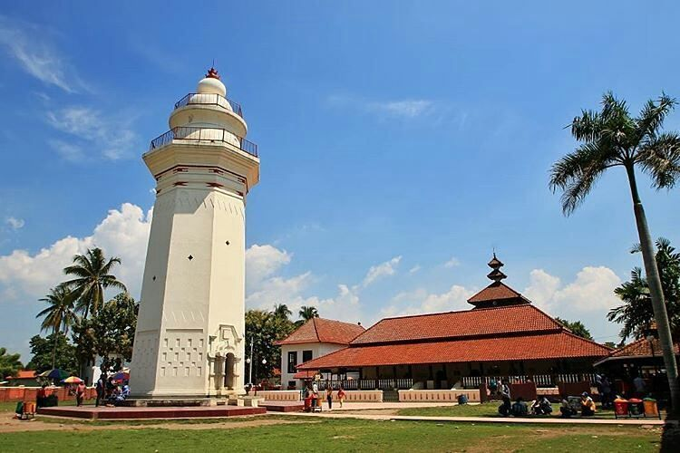

MASJID AGUNG BANTEN
Masjid Agung Banten menjadi ikon sejarah di kota Serang yang letaknya berada di kawasan kota lama ada di bagian utara kota. Bangunan masjid ini didirikan pada tahun 1556 oleh Sultan Maulana Hassanudin dan menjadi salah satu masjid tertua di Indonesia. Salah satu bangunan yang menarik di sini adalah bentuk menaranya yang sangat khas mirip dengan mercusuar. Sementara perpaduan arsitektur bangunannya memadukan gaya Tionghoa, Arab, dan Belanda yang membuatnya terlihat sangat unik.